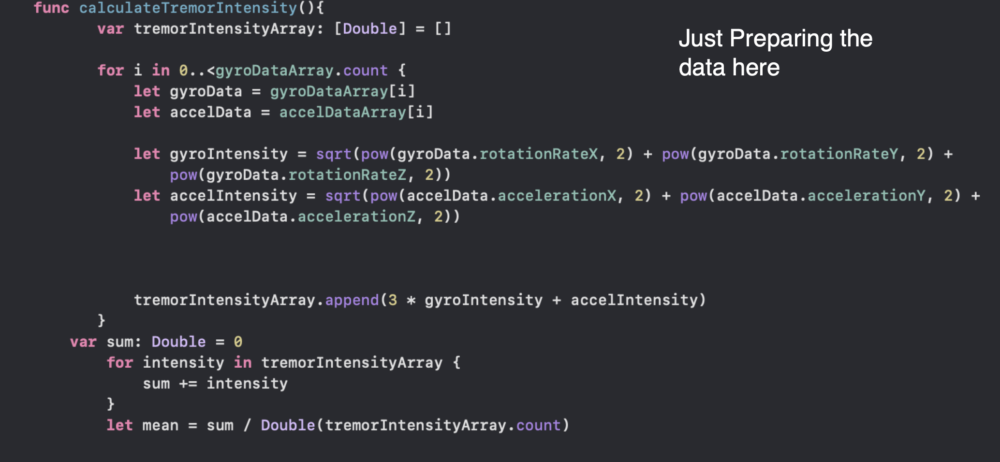
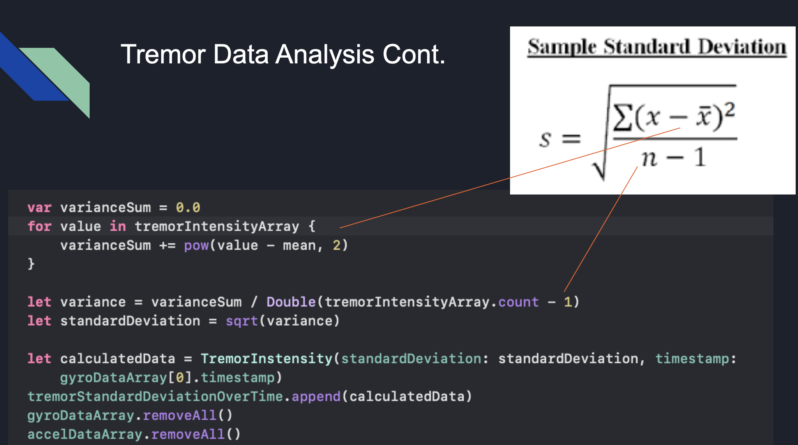

Tags: Swift, Model View Controller pattern, IOS programming, object oriented programming and data analysis
NeuroTrack is an IOS app I developed in collaberation with Darrion Shack. The purpose of this app is to track the tremors, motor function, and gait patterns of patients with Parkinson's disease over a period of time using data analysis techinques to better understand how the patient's symptoms are progressing. This app does this by using the IOS Core Data, Core Motion, and User Notifications frameworks.
At the moment, the app just presents what your average change in symptoms are over a selected period of time, however in the future we would like to graph this data to better visualize changes.
You can download this app by opening the project in XCode and building the app for your device. You can simply create an apple developer account for free. I would publish this on the app store however Apple charges an exorbent $100 fee to get a publisher's lisence to publish apps on the app store, thus I have decided to make the app downloadable from XCode. Here is a guide on how to do that if you need help. https://www.youtube.com/watch?v=TlgumE2xe_E
This program is implemented using the Model View Controller design pattern, you can read more about the MVC pattern here. The view is the interface the user interacts with, the controller is responsible for data collection to send the data to the model , and the model serves as central database for all the data collected and where data compression and analysis is performed. Let's start from the front-end to the back-end. First the user decides what sypmtoms they would like to track. After selecting the correct symptom, the Core Motion framework is used to access the device's gyroscope, pedometer, and accelerometer. This data is then sent to the view controller which packages it for the model. The model has to first extact the data from the accelerometer and gyroscope out of the matrixes they are in by using a formula simular to pythagorian's theorem. The data is represented as a matrix for the 3 coordinate planes (the x-axis, y-axis, and z-axis)  I then compress this data by finding the standard deviation of a singular measurement event to compress the data. This is important because it gives us a basis to compare data points to and also decreases the amount of data we are collecting is memory as the accelerometer and gyroscope collect data 10 times per second. This is how my code turns each measuring event into the standard deviation.  First, to calculate the numerator, we found the summation of the measuring event of each data collected, subtracted by the overall mean, which is then squared. Then we divide it by the number of data points collected minus 1. The measuring events are stored in an array, so we can just take the count of that. Finally, we take the square root of that. We store these deviations in a struct with a timestamp so that we can understand what the patient's symptoms are like over certain periods of time. Their data is saved in persistant storage by using the Core Data framework.